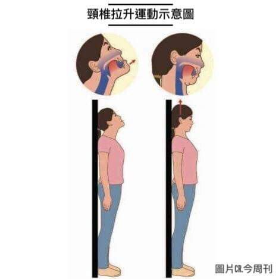

想了解更多?看下去就對了
如果牙齒莫名出現疼痛，但牙齒並沒有出現破損、缺失的現象，去了牙科檢查治療也不見好轉的話，那麼這種牙痛很有可能是頸椎病引起的。 頸椎病分為頸型頸椎病、交感神經型頸椎病、椎動脈型頸椎病、神經根型頸椎病、混合型頸椎病等，而可能會造成牙痛的就是交感神經型頸椎病，雖然是比較少見的一種，但此類頸椎病因為頸部交感神經節受到刺激，會產生頭暈、昏沉、偏頭痛、心慌、胸悶、四肢發涼等症狀。 骨科專家表示，如果頸椎發生退行性病變，就會導致位於第五頸椎和第五頸椎橫突前面的頸部交感神經受到壓迫，所產生的異常刺激就會由頸部的交感神經傳遞到三叉神經脊髓核，再由三叉神經下頜傳到牙槽，導致牙齒出現嚴重的疼痛，但是牙齒並沒有發生病變。
learn more維持頭部垂直位的四組肌群，醫學上稱姿態肌肉鏈。 上下牙齒的咬合接觸輕微改變時，頭的位置發生變化，下頜骨的位置也就發生改變。相應上下牙列咬合不正、不平衡也就打破了頭部垂直位置的姿態肌肉鏈。造成左右兩側、下頜、及頭頸部四組肌肉的生理功能不和諧一致及損壞平衡，出現頸肩肌肉酸脹疼痛、頭昏等症狀。 人的牙齒萌出後因患牙周病、緊咬牙、單側咀嚼、夜磨牙、齲壞、失牙和磨耗等不良的咬合情況、都能打破姿態肌肉鏈和諧一致及協調平衡力而出現頭頸部和其他部位的症狀。有的病人失牙後腸胃消化不良，鑲上義齒後原單側咀嚼變兩側咀嚼，頸肩部的症狀也就隨之消失。 有的病人因齲壞、牙周病失牙打破了咬合平衡的因素，肩頸部的症狀也就出現了。可是有一些病人因鑲牙、補牙、磨耗、咬合不良等難以發現自身和醫源性的因素，加重肩頸部的酸脹疼痛。由於牙齒咬合的改變引起維持頭部直立位置的肌肉鏈的改變，肌肉鏈不協調一致，而造成肩頸部的酸脹疼痛，口腔醫學又稱為之為「合頸綜合症」。
learn more下顎骨、顳骨與枕骨的律動有一致性的趨勢，而枕骨又深深影響著頸椎的彎曲。 其次，下顎骨的結構是以皮質骨為主，重量相較於頭顱其他顱骨大，厚而緻密。 整個下顎骨可能占了頭顱重量的三分之一，明顯影響著頭顱的重心位置。 因此拔牙矯正的病人，有可能因為上排牙弓與上顎骨頭變小，導致下排牙齒與大小一樣的下顎骨頭必須往後來對合上排的牙齒，重心改變與下顎後縮，讓顳骨與枕骨相對律動的結果增加頸椎過度往前彎曲的窘狀。 還有近年來3C裝置已成為人們生活中密不可分的一部分，許多人目不轉睛地盯著手中的手機或平板電腦，當低頭看螢幕時，頭部會更往前傾，過度彎曲的頸椎將枕骨前側往上過度頂上，進而造成下顎骨被迫過度後移； 這時候的上下牙齒緊咬，長久下來，不僅需要肩、頸、腰、背部更多肌肉幫忙拉住前傾的頭，身體姿勢也更加異常：頸椎習慣前彎，下顎自然後縮，咽喉氣道更容易受到壓迫，心肺功能負擔因而加重，勢必影響健康。
改善頸椎過度彎曲與頭部習慣自然前傾運動報給你
1.頭、背與臀部靠著牆壁。
2.頭貼著牆，上下移動。
3.眼睛往上看，下巴往前伸，下巴慢慢往上抬到最高，持續五秒鐘。
4.頭繼續貼著牆，可以讓前頸與舌骨周圍肌群緊繃後放鬆。
5.眼睛往下看，下巴往下、往後收，感覺頭被繩子往上拉高，持續五秒鐘。
6.頭持續貼著牆，可以讓枕下肌群與闊背肌緊繃後放鬆，舒緩頸椎的壓迫。
7.建議連續做二十至三十次，分別在早、午、晚等不同時段練習。
運動過程中需注意什麼呢?
1.頭部要持續貼著牆壁動作，下巴要往上。
2.嘴唇緊閉。
3.上下排牙齒要分開，不要咬到。
4.舌頭持續頂著上顎。
5.熟練後，可以下巴往上的同時深深吐氣，下巴往下時深深吸氣。
6.強調拉脖子，所以頭要往上。
TMJ(temporomandibular joint disorder)代表連接上顎與下顎的樞紐(俗稱下巴關節)無法適當活動。 此樞紐是身體中最複雜的關節之一，負責使下顎向前、向後及側向的移動。 任何使這個含肌肉、韌帶、骨盤及骨頭的複雜系統無法正常移動的問題，皆稱作TMJ。例如：顎骨突然發出輕脆細微的聲響(砰、啪或喀擦等)。
TMJ的症狀為何?
TMJ疾病具有許多的徵兆及症狀。我們通常難以得知個人是否罹患TMJ，因為多種症狀中的一個或所有症狀皆有可能因其他問題而發生。 牙醫師可取得完整的醫療與牙科病史、做臨床檢查及照X光，幫忙進行適當的診斷。 最常見的TMJ症狀包括：
1.頭痛(很像偏頭痛，migraine)、耳朵痛及眼睛所造成的疼痛與壓力。
2.開闔嘴巴時發出輕脆細微的聲響。
3.因呻吟、張大嘴巴或咀嚼所引起的疼痛。
4.因呻吟、張大嘴巴或咀嚼所引起的疼痛顎骨卡住、鎖住或脫臼。
5.顎骨肌肉碰觸即痛。
6.上下齒列咬合的方式突然改變。
TMJ的治療方法?
TMJ的治療方法並不單一，可採用能大幅減輕症狀的不同治療方法。牙醫師至少會建議以下方法中的一種：
1.嘗試以熱敷或服用藥物(例如：肌肉鬆弛劑、阿斯匹靈或其他藥房可購得的止痛劑，或抗過敏劑)消除肌肉痙攣與疼痛。
2.戴上一種裝置(有時稱為咬合片bite plate或夾板splint)減輕咬合時的疼痛。這種裝置能量身訂製而吻合個人的嘴巴，可蓋住上排牙齒並防止上排牙齒與下排牙齒相磨。
3.學習鬆弛技術幫助控制顎骨的肌肉張力，牙醫師會建議患者接受訓練或學習如何消除壓力。
4.當顎關節受到影響且其他治療方法皆無法奏效時，則建議進行顎關節手術。